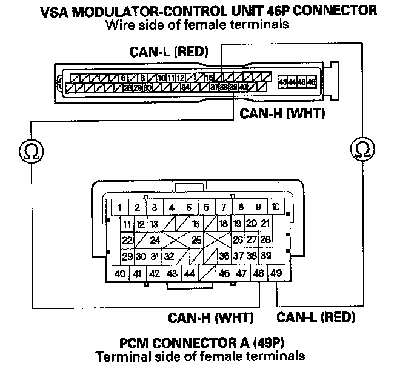

DTC 92
DTC 92: F-CAN System (Bus-off)NOTE: Check the PCM for DTCs. If there are DTCs present, troubleshoot them first.
1. Turn the ignition switch ON (II).
2. Clear the DTC with the HDS.
3. Turn the ignition switch OFF, then turn it ON (II) again.
4. Check for DTCs with the HDS.
Is DTC 92 indicated?
YES-Go to step 5.
NO-intermittent failure, the system is OK at this time. Check for loose terminals between the PCM connector A (49P), and the VSA modulator-control unit 46P connector. Check for a loose connection at G303. Refer to intermittent failures troubleshooting.
5. Turn the ignition switch OFF.
6. Short the SCS line with the HDS.
7. Disconnect the PCM connector A (44P).
8. Disconnect the VSA modulator-control unit 46P connector.
9. Check for continuity between VSA modulator control unit 46P connector terminal No. 38, and No. 39 and PCM connector A (49P) terminal No. 49, and No. 48 respectively.

Is there continuity?
YES-Check for loose terminals in the VSA modulator-control unit 46P connector. Check for a loose connection at G303. If necessary, substitute a known-good VSA modulator-control unit and retest.
NO-Repair open in the wire between the PCM and the VSA modulator-control unit.